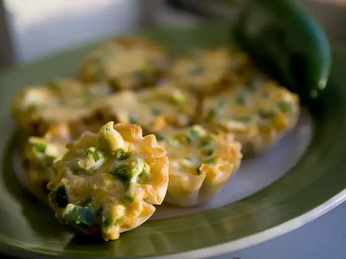

Recipe for the Jalapeno Popper Cups

Didn't have enough Jalapenos to make full out poppers, but improvised for a creamy and spicy appetizer. You'll want to eat them right away, but they will be molten hot so be careful!
Ingredients Required
- 12 Tart Shells
- 4 Ounces of Cream Cheese
- Some cups of cheddar cheese
Detailed Instructions
- Preheat the oven to 100
- Stir all the cheeses together and cook
- Bake it in an oven please